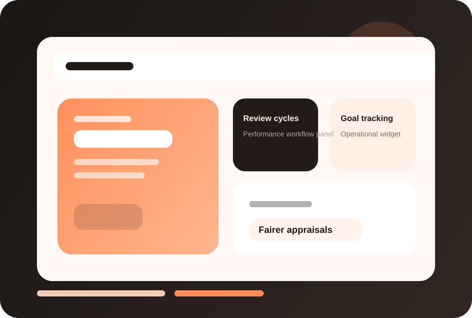

Fairer reviews
Create more consistent evaluation quality across teams and roles.
FuzionHR helps businesses run more structured appraisal cycles, manager feedback processes and development conversations that drive accountability.

This page now has a dedicated visual treatment, stronger readability, and screenshot-ready product areas so you can drop in actual FuzionHR UI captures later.
Clearer module identity and stronger visual recognition.
Dedicated screenshot frames for real product views.
Structure remains intact while the design feels richer.
Create more consistent evaluation quality across teams and roles.
Use performance cycles to guide development, not just score outcomes.
See talent patterns, review completion and organizational performance themes.
These screenshot frames are placeholders for your actual product UI. Once you share real captures, we can place them here with polished annotations.
Replace this frame with your real product screenshot to show the live FuzionHR UI.
Use this area for dashboards, approvals, reports or employee-facing views.